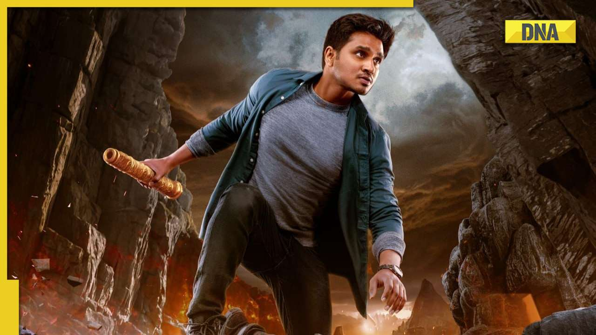

Karthikeya2

Karthikeya 2 is a 2022 Indian Telugu-language mystery action-adventure film[4][5] written and directed by Chandoo Mondeti. The film serves as a sequel to the 2014 film Karthikeya and stars Nikhil Siddhartha, Anupama Parameswaran, and Anupam Kher. It is produced by Abhishek Agarwal Arts and People Media Factory. The plot follows Dr. Karthikeya who is on a quest to find the lost anklet of Lord Krishna.
The film was officially launched in March 2020. Principal photography commenced in February 2021 and ended in March 2022, with delays due to the COVID-19 pandemic. Filming took place in India, predominantly in Gujarat and Himachal Pradesh, in addition to Spain, Portugal, and Greece in Europe. The film's music composed by Kaala Bhairava with cinematography and editing done by Karthik Ghattamneni. Made on an budget of ₹15−30 crore,[a] Karthikeya 2 was released on 13 August 2022 and received positive reviews from critics and emerged as a commercial success. arch 2022, with delays due to the COVID-19 pandemic. Filming took place in India, predominantly in Gujarat and Himachal Pradesh, in addition to Spain, Portugal, and Greece in Europe. The film's music composed by Kaala Bhairava with cinematography and editing done by Karthik Ghattamneni. Made on an budget of ₹15−30 crore,[a] Karthikeya 2 was released on 13 August 2022 and received positive reviews from critics and emerged as a commercial success.
wikipedia
youtube
github